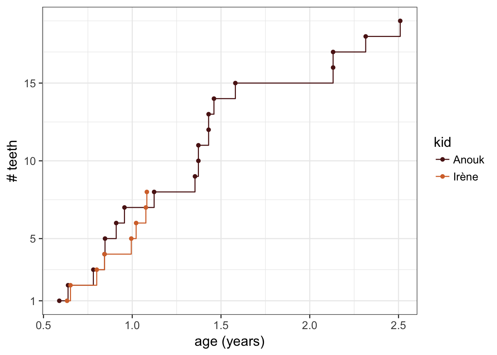

teething
Jul 31, 2016 00:00 · 339 words · 2 minute read
Teething can be tough for kids, and so for the parents. For our first kid, it was actually pretty painful. Then, I wanted to see how synchronize the second kid would be with the first one.
Input data
This was an old input, now I would use the datapasta rstudio addin by Miles Mc Bain to get a tribble from any spreadsheet.
teeth <- data.frame(stringsAsFactors = FALSE,
kid = c("Anouk", "Anouk", "Anouk", "Anouk", "Anouk", "Anouk", "Anouk",
"Anouk", "Anouk", "Anouk", "Anouk", "Anouk", "Anouk", "Anouk",
"Anouk", "Anouk", "Anouk", "Anouk", "Anouk", "Irène", "Irène",
"Irène", "Irène"),
date = c("2014-03-31", "2014-04-18", "2014-07-02", "2014-06-09",
"2014-07-03", "2014-07-26", "2014-08-12", "2014-10-12",
"2015-01-11", "2015-01-11", "2015-01-04", "2015-02-01", "2015-02-01",
"2015-02-12", "2015-03-28", "2015-10-15", "2015-10-15",
"2015-12-21", "2016-03-01", "2017-05-11", "2017-05-18", "2017-07-11",
"2017-07-27"),
teeth = c("incisive inf cent D", "incisive inf cent G",
"incisive sup cent D", "incisive sup cent G",
"incisive sup lat G", "incisive sup lat D", "incisive inf lat D",
"incisive inf lat G", "prem 1 sup G", "prem 1 inf D", "prem 1 sup D",
"prem 1 sup D", "canine sup G", "canine sup D", "canine inf D",
"prem 2 inf G", "prem 2 inf D", "prem 2 sup D", "prem 2 sup G",
"incisive inf cent D", "incisive inf cent G", "incisive sup cent D",
"incisive sup cent G")
)https://en.wikipedia.org/wiki/Dental_notation
Primary Dentition
upper right - 5 upper left - 6
55 54 53 52 51 | 61 62 63 64 65
R --------------------------------- L
85 84 83 82 81 | 71 72 73 74 75
lower right - 8 lower left - 7
I - incisor
C - canine
P - premolar
M - molarPlotting
teeth %>%
mutate(date = parse_date(date),
age = case_when(kid == "Anouk" ~ date - ymd("20130828"),
kid == "Irène" ~ date - ymd("20160922")),
age2 = as.numeric(age) / 365) %>%
group_by(kid) %>%
arrange(age) %>%
mutate(n_teeth = row_number()) %>%
ggplot(aes(x = age2, y = n_teeth, colour = kid), width = 20) +
geom_step() +
geom_point() +
scale_y_continuous(breaks = c(1, seq(5, 20, 5))) +
scale_color_manual(values = wesanderson::wes_palette("GrandBudapest")[3:4]) +
theme_bw(14) +
labs(x = "age (years)",
y = "# teeth")